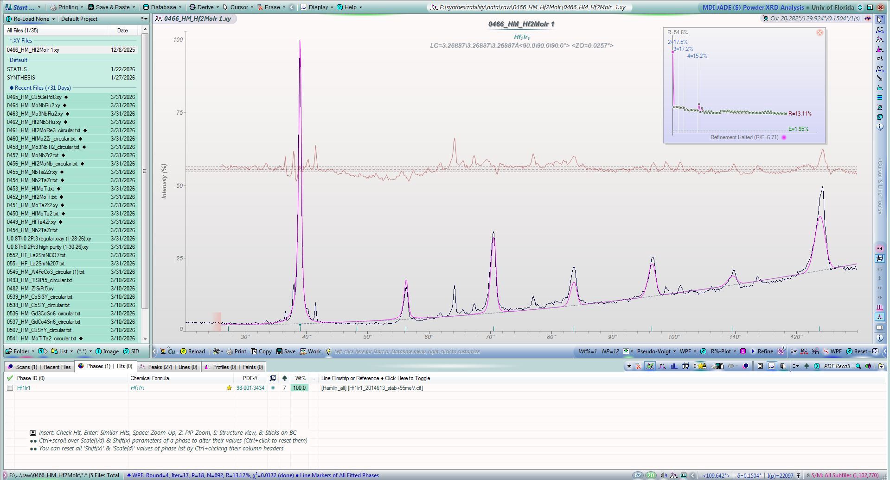
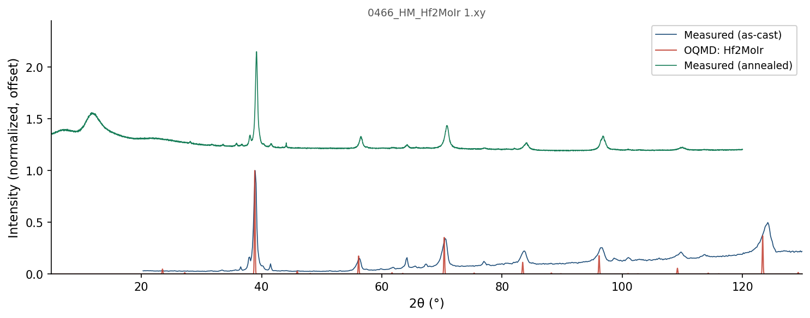
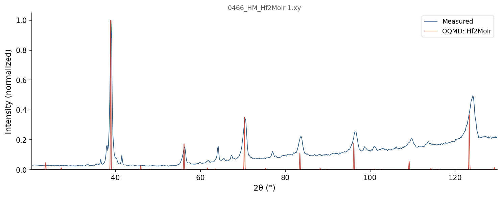

| Element | Expected (mol frac) | Measured (mol frac) | Δ (mol frac) | Δ (%) |
|---|---|---|---|---|
| Hf | 0.5000 | 0.4991 | -0.0009 | -0.09% |
| Ir | 0.2500 | 0.2493 | -0.0007 | -0.07% |
| Mo | 0.2500 | 0.2516 | +0.0016 | +0.16% |
216 OQMD entries in the Hf-Ir-Mo element system (14 on hull, 32 ICSD-tagged). OQMD: negative = below hull (stable). Sorted most stable first.
| Composition | Stability (meV/atom) | ΔE (meV/atom) | ICSD | Space | Entry | CIF |
|---|---|---|---|---|---|---|
Hf1Ir1 |
-132 | -986.4 | Hf-Ir | 1370619 | CIF | |
Hf1Ir3 |
-123 | -803.4 | ✓ | Hf-Ir | 17363 | CIF |
Hf1Mo2 |
-105 | -170.3 | Hf-Mo | 1592121 | CIF | |
Ir3Mo1 |
-90 | -333.1 | Ir-Mo | 1929525 | CIF | |
Ir1Mo1 |
-60 | -323.8 | Ir-Mo | 1977792 | CIF | |
Hf2Ir1 |
-23 | -751.6 | Hf-Ir | 1368635 | CIF | |
Hf2Ir1Mo1 |
-19 | -607.5 | Hf-Ir-Mo | 1013867 | CIF | |
Hf1Ir2 |
-11 | -875.5 | Hf-Ir | 1436115 | CIF | |
Hf5Ir3 |
-6 | -816.7 | ✓ | Hf-Ir | 2052706 | CIF |
Ir5Mo3 |
-1 | -329.6 | Ir-Mo | 2131726 | CIF | |
Ir8Mo1 |
+0 | -148.1 | Ir-Mo | 2131787 | CIF | |
Hf1 |
+0 | 0.0 | Hf | 1215332 | CIF | |
Ir1 |
+0 | 0.0 | ✓ | Ir | 7521 | CIF |
Mo1 |
+0 | 0.0 | Mo | 1215167 | CIF | |
Hf2Ir1Mo1 |
+0 | -607.5 | Hf-Ir-Mo | 1018128 | CIF | |
Ir8Mo1 |
+0 | -148.1 | Ir-Mo | 1950050 | CIF | |
Ir3Mo1 |
+0 | -333.1 | Ir-Mo | 1908275 | CIF | |
Hf2Ir1Mo1 |
+0 | -607.5 | Hf-Ir-Mo | 1014363 | CIF | |
Hf1 |
+0 | 0.1 | ✓ | Hf | 677914 | CIF |
Mo1 |
+0 | 0.1 | Mo | 1522085 | CIF | |
Mo1 |
+0 | 0.1 | Mo | 1522090 | CIF | |
Ir1Mo1 |
+0 | -323.7 | Ir-Mo | 1960717 | CIF | |
Hf1Mo2 |
+0 | -170.1 | ✓ | Hf-Mo | 17365 | CIF |
Hf1 |
+0 | 0.2 | ✓ | Hf | 676495 | CIF |
Mo1 |
+0 | 0.3 | ✓ | Mo | 676469 | CIF |
Hf1 |
+0 | 0.3 | ✓ | Hf | 687554 | CIF |
Ir3Mo1 |
+0 | -332.8 | ✓ | Ir-Mo | 17499 | CIF |
Hf1 |
+0 | 0.3 | ✓ | Hf | 676527 | CIF |
Ir3Mo1 |
+0 | -332.8 | Ir-Mo | 1955649 | CIF | |
Ir1Mo1 |
+0 | -323.5 | ✓ | Ir-Mo | 17498 | CIF |
Hf1 |
+1 | 0.5 | ✓ | Hf | 687654 | CIF |
Ir3Mo1 |
+1 | -332.6 | Ir-Mo | 1908362 | CIF | |
Hf1 |
+1 | 0.6 | ✓ | Hf | 2030130 | CIF |
Ir1 |
+1 | 1.1 | Ir | 1214536 | CIF | |
Ir3Mo1 |
+1 | -332.0 | Ir-Mo | 319212 | CIF | |
Hf2Ir1Mo1 |
+1 | -606.2 | Hf-Ir-Mo | 415579 | CIF | |
Hf1Ir3 |
+1 | -802.1 | Hf-Ir | 349391 | CIF | |
Ir1 |
+2 | 2.2 | Ir | 1215694 | CIF | |
Hf1 |
+2 | 2.4 | Hf | 1215243 | CIF | |
Hf1Mo2 |
+6 | -163.8 | ✓ | Hf-Mo | 2052714 | CIF |
Hf1Mo2 |
+7 | -163.3 | Hf-Mo | 1610025 | CIF | |
Hf2Ir1Mo1 |
+7 | -600.2 | Hf-Ir-Mo | 1017050 | CIF | |
Hf3Ir5 |
+12 | -891.6 | Hf-Ir | 2131688 | CIF | |
Hf3Ir1 |
+13 | -551.1 | Hf-Ir | 1800424 | CIF | |
Hf1Ir7 |
+13 | -388.9 | Hf-Ir | 1951190 | CIF | |
Hf5Ir3 |
+13 | -803.5 | Hf-Ir | 1340348 | CIF | |
Hf5Ir3 |
+13 | -803.3 | ✓ | Hf-Ir | 30513 | CIF |
Hf5Ir3 |
+13 | -803.2 | Hf-Ir | 1340026 | CIF | |
Hf3Ir5 |
+17 | -886.5 | Hf-Ir | 1795223 | CIF | |
Hf1Mo2 |
+21 | -148.8 | Hf-Mo | 1609935 | CIF | |
Hf1Mo2 |
+21 | -148.8 | ✓ | Hf-Mo | 2033985 | CIF |
Hf2Ir1 |
+31 | -720.6 | ✓ | Hf-Ir | 2052705 | CIF |
Hf1 |
+32 | 32.2 | Hf | 1216045 | CIF | |
Ir1 |
+33 | 33.4 | Ir | 1214625 | CIF | |
Ir1 |
+35 | 34.7 | Ir | 1215427 | CIF | |
Hf2Ir1Mo1 |
+37 | -570.0 | Hf-Ir-Mo | 1012791 | CIF | |
Hf1 |
+43 | 43.1 | ✓ | Hf | 2015187 | CIF |
Hf1 |
+43 | 43.5 | Hf | 1801138 | CIF | |
Ir1 |
+47 | 47.3 | Ir | 1216050 | CIF | |
Hf1Ir1 |
+51 | -935.8 | ✓ | Hf-Ir | 2014615 | CIF |
Hf1 |
+52 | 51.9 | Hf | 1215422 | CIF | |
Hf1Mo3 |
+55 | -72.9 | Hf-Mo | 1793441 | CIF | |
Hf1Ir1 |
+64 | -922.3 | ✓ | Hf-Ir | 2014614 | CIF |
Hf2Mo1 |
+66 | -19.1 | Hf-Mo | 1449931 | CIF | |
Hf1Ir3 |
+67 | -736.8 | Hf-Ir | 324905 | CIF | |
Ir3Mo1 |
+69 | -264.4 | Ir-Mo | 343698 | CIF | |
Hf1 |
+72 | 71.7 | Hf | 1214531 | CIF | |
Hf1 |
+72 | 71.9 | ✓ | Hf | 676154 | CIF |
Hf1 |
+72 | 72.0 | Hf | 1215689 | CIF | |
Ir1 |
+73 | 72.9 | Ir | 2043731 | CIF | |
Ir1 |
+74 | 73.6 | Ir | 1215248 | CIF | |
Ir1Mo3 |
+78 | -84.3 | ✓ | Ir-Mo | 30617 | CIF |
Hf1Ir2 |
+79 | -796.9 | Hf-Ir | 1520608 | CIF | |
Hf1 |
+80 | 79.9 | Hf | 1215778 | CIF | |
Hf1 |
+83 | 83.1 | Hf | 1214620 | CIF | |
Hf1Mo3 |
+87 | -40.4 | Hf-Mo | 310105 | CIF | |
Hf1Mo3 |
+88 | -39.8 | Hf-Mo | 2085980 | CIF | |
Hf1Mo3 |
+88 | -39.8 | Hf-Mo | 2121360 | CIF | |
Hf1Ir8 |
+91 | -266.0 | Hf-Ir | 1950067 | CIF | |
Hf3Mo1 |
+92 | 27.9 | Hf-Mo | 2080674 | CIF | |
Hf1Ir1 |
+92 | -894.6 | Hf-Ir | 339151 | CIF | |
Hf1Ir1 |
+94 | -892.2 | Hf-Ir | 307609 | CIF | |
Mo1 |
+95 | 94.5 | Mo | 1280332 | CIF | |
Mo1 |
+95 | 94.5 | Mo | 1214989 | CIF | |
Hf1Ir1 |
+95 | -891.6 | ✓ | Hf-Ir | 2014613 | CIF |
Hf1Mo1 |
+98 | -29.8 | Hf-Mo | 2080426 | CIF | |
Hf1Mo3 |
+99 | -28.7 | Hf-Mo | 2080538 | CIF | |
Hf1Mo3 |
+101 | -26.9 | Hf-Mo | 2082277 | CIF | |
Hf3Mo1 |
+104 | 40.6 | Hf-Mo | 2086116 | CIF | |
Ir3Mo1 |
+107 | -226.2 | Ir-Mo | 300886 | CIF | |
Hf1Mo1 |
+120 | -7.8 | Hf-Mo | 2082127 | CIF | |
Mo1 |
+124 | 123.6 | Mo | 1215880 | CIF | |
Ir1Mo1 |
+127 | -197.3 | Ir-Mo | 1230018 | CIF | |
Hf1Mo1 |
+135 | 7.1 | Hf-Mo | 2085844 | CIF | |
Hf1Mo1 |
+138 | 10.1 | Hf-Mo | 306556 | CIF | |
Hf1 |
+139 | 138.6 | Hf | 1214887 | CIF | |
Hf1Mo1 |
+139 | 11.6 | Hf-Mo | 1435347 | CIF | |
Hf1Mo1 |
+139 | 11.6 | Hf-Mo | 1435346 | CIF | |
Ir1 |
+144 | 144.5 | Ir | 1520849 | CIF | |
Hf1Mo1 |
+151 | 23.5 | Hf-Mo | 338098 | CIF | |
Ir1Mo3 |
+153 | -8.5 | Ir-Mo | 346456 | CIF | |
Hf3Mo1 |
+155 | 90.9 | Hf-Mo | 2082427 | CIF | |
Ir1 |
+166 | 165.9 | Ir | 2066488 | CIF | |
Ir1Mo1 |
+169 | -154.5 | Ir-Mo | 337688 | CIF | |
Hf1Ir3 |
+175 | -628.4 | Hf-Ir | 299723 | CIF | |
Hf2Ir1 |
+175 | -576.4 | Hf-Ir | 1521331 | CIF | |
Hf1 |
+180 | 179.7 | Hf | 1215154 | CIF | |
Hf1 |
+180 | 179.7 | ✓ | Hf | 684885 | CIF |
Hf1 |
+180 | 179.8 | Hf | 1215867 | CIF | |
Hf1 |
+180 | 179.9 | Hf | 1522340 | CIF | |
Hf3Mo1 |
+184 | 119.9 | Hf-Mo | 312281 | CIF | |
Hf1Ir2 |
+185 | -690.2 | Hf-Ir | 1521664 | CIF | |
Ir1Mo3 |
+196 | 33.7 | Ir-Mo | 298137 | CIF | |
Ir1 |
+204 | 204.2 | Ir | 2066506 | CIF | |
Ir1Mo3 |
+205 | 42.8 | Ir-Mo | 321970 | CIF | |
Hf1Mo1 |
+205 | 77.3 | Hf-Mo | 2082577 | CIF | |
Hf1Ir2 |
+205 | -670.3 | Hf-Ir | 1594684 | CIF | |
Ir1Mo1 |
+207 | -116.9 | Ir-Mo | 327230 | CIF | |
Hf1Mo1 |
+214 | 86.0 | Hf-Mo | 2121111 | CIF | |
Hf1Mo1 |
+214 | 86.0 | Hf-Mo | 2084787 | CIF | |
Hf1 |
+218 | 217.8 | Hf | 1214798 | CIF | |
Hf3Mo1 |
+232 | 168.1 | Hf-Mo | 320647 | CIF | |
Ir1 |
+236 | 236.4 | Ir | 2066497 | CIF | |
Hf1Ir1Mo2 |
+239 | -254.5 | Hf-Ir-Mo | 1143723 | CIF | |
Hf1Ir1Mo2 |
+239 | -254.5 | Hf-Ir-Mo | 1147235 | CIF | |
Hf3Mo1 |
+239 | 175.4 | Hf-Mo | 301739 | CIF | |
Hf1 |
+243 | 243.4 | Hf | 1214976 | CIF | |
Hf3Ir1 |
+251 | -313.1 | Hf-Ir | 314363 | CIF | |
Hf1Mo1 |
+257 | 129.6 | Hf-Mo | 2083243 | CIF | |
Hf3Mo1 |
+263 | 198.8 | Hf-Mo | 345133 | CIF | |
Hf1 |
+267 | 266.9 | Hf | 1215065 | CIF | |
Mo1 |
+268 | 267.8 | Mo | 1214811 | CIF | |
Hf3Ir1 |
+271 | -292.8 | Hf-Ir | 345293 | CIF | |
Hf3Ir1 |
+272 | -291.5 | Hf-Ir | 303821 | CIF | |
Hf3Ir1 |
+274 | -289.4 | Hf-Ir | 320807 | CIF | |
Ir1 |
+280 | 279.6 | Ir | 1214892 | CIF | |
Ir3Mo5 |
+292 | 49.1 | Ir-Mo | 1277791 | CIF | |
Mo1 |
+308 | 307.7 | Mo | 1214900 | CIF | |
Ir1 |
+320 | 320.5 | ✓ | Ir | 2030151 | CIF |
Ir1 |
+324 | 324.3 | Ir | 1214803 | CIF | |
Ir1Mo3 |
+326 | 164.1 | Ir-Mo | 308670 | CIF | |
Ir1 |
+330 | 329.7 | ✓ | Ir | 2031495 | CIF |
Mo1 |
+330 | 329.9 | ✓ | Mo | 2030156 | CIF |
Mo1 |
+334 | 334.1 | Mo | 1215702 | CIF | |
Hf1Mo3 |
+336 | 208.4 | Hf-Mo | 299563 | CIF | |
Hf1Mo5 |
+351 | 265.9 | Hf-Mo | 1435734 | CIF | |
Hf1Mo5 |
+351 | 265.9 | Hf-Mo | 1472011 | CIF | |
Ir1 |
+351 | 351.0 | Ir | 2066515 | CIF | |
Mo1 |
+362 | 362.4 | Mo | 1215256 | CIF | |
Mo1 |
+366 | 366.0 | Mo | 1214633 | CIF | |
Hf1 |
+379 | 379.3 | Hf | 1214709 | CIF | |
Ir1 |
+382 | 382.0 | Ir | 1215070 | CIF | |
Ir1 |
+382 | 382.0 | Ir | 1214714 | CIF | |
Hf1Mo2 |
+405 | 234.4 | ✓ | Hf-Mo | 2033987 | CIF |
Mo1 |
+406 | 405.7 | ✓ | Mo | 2031498 | CIF |
Hf2Ir1Mo1 |
+407 | -200.3 | Hf-Ir-Mo | 1147048 | CIF | |
Hf2Ir1Mo1 |
+407 | -200.3 | Hf-Ir-Mo | 1127778 | CIF | |
Hf1Mo1 |
+410 | 282.6 | Hf-Mo | 327640 | CIF | |
Mo1 |
+416 | 415.6 | ✓ | Mo | 676152 | CIF |
Mo1 |
+416 | 416.0 | Mo | 1214544 | CIF | |
Hf1Ir1 |
+420 | -566.8 | Hf-Ir | 1106794 | CIF | |
Mo1 |
+421 | 420.8 | ✓ | Mo | 2030243 | CIF |
Mo1 |
+422 | 422.1 | Mo | 1215435 | CIF | |
Mo1 |
+429 | 429.0 | Mo | 1216061 | CIF | |
Mo1 |
+433 | 433.4 | ✓ | Mo | 2030388 | CIF |
Ir1Mo2 |
+434 | 218.1 | Ir-Mo | 1592125 | CIF | |
Mo1 |
+434 | 434.3 | Mo | 1215345 | CIF | |
Hf1Ir2Mo1 |
+440 | -216.3 | Hf-Ir-Mo | 1144270 | CIF | |
Hf1Ir2Mo1 |
+440 | -216.3 | Hf-Ir-Mo | 1128474 | CIF | |
Hf1Ir2Mo1 |
+450 | -206.4 | Hf-Ir-Mo | 459378 | CIF | |
Mo1 |
+458 | 458.0 | Mo | 1215791 | CIF | |
Hf1Mo1 |
+486 | 358.8 | Hf-Mo | 1229758 | CIF | |
Hf2Ir1Mo1 |
+487 | -120.4 | Hf-Ir-Mo | 1018621 | CIF | |
Hf1Ir1 |
+488 | -497.9 | Hf-Ir | 328693 | CIF | |
Hf1Mo3 |
+493 | 365.7 | Hf-Mo | 322823 | CIF | |
Ir1 |
+507 | 507.5 | Ir | 1280407 | CIF | |
Hf1Ir1Mo2 |
+509 | 16.2 | Hf-Ir-Mo | 449954 | CIF | |
Ir1 |
+509 | 509.5 | Ir | 1214981 | CIF | |
Mo1 |
+543 | 542.9 | Mo | 1215078 | CIF | |
Hf1Mo3 |
+549 | 421.5 | Hf-Mo | 347309 | CIF | |
Ir2Mo1 |
+556 | 224.9 | Ir-Mo | 1594655 | CIF | |
Hf1Ir1 |
+574 | -412.3 | Hf-Ir | 1229751 | CIF | |
Hf1 |
+577 | 577.2 | Hf | 1277911 | CIF | |
Ir1 |
+579 | 579.2 | Ir | 1215872 | CIF | |
Hf3Ir2Mo2 |
+598 | -38.6 | Hf-Ir-Mo | 1007267 | CIF | |
Ir1 |
+611 | 610.5 | Ir | 1522170 | CIF | |
Ir1 |
+612 | 612.0 | Ir | 1215159 | CIF | |
Hf1Ir3 |
+634 | -169.4 | Hf-Ir | 310265 | CIF | |
Ir3Mo1 |
+645 | 311.5 | Ir-Mo | 311428 | CIF | |
Ir1Mo1 |
+647 | 323.0 | Ir-Mo | 306146 | CIF | |
Hf1Ir1Mo1 |
+647 | -10.6 | Hf-Ir-Mo | 893966 | CIF | |
Hf1 |
+658 | 658.0 | Hf | 1215600 | CIF | |
Ir1 |
+668 | 668.3 | Ir | 1215605 | CIF | |
Hf2Mo1 |
+712 | 626.9 | Hf-Mo | 1609944 | CIF | |
Hf2Mo1 |
+738 | 653.1 | Hf-Mo | 1610034 | CIF | |
Hf2Mo1 |
+778 | 692.9 | Hf-Mo | 1594288 | CIF | |
Mo1 |
+835 | 835.0 | Mo | 1215613 | CIF | |
Mo1 |
+937 | 937.0 | Mo | 1214722 | CIF | |
Hf1Ir1Mo1 |
+950 | 292.8 | Hf-Ir-Mo | 884542 | CIF | |
Ir1 |
+988 | 988.1 | Ir | 1215783 | CIF | |
Ir1 |
+1005 | 1005.2 | Ir | 1215516 | CIF | |
Hf1Mo1 |
+1074 | 946.7 | Hf-Mo | 1105741 | CIF | |
Ir1Mo1 |
+1082 | 758.3 | Ir-Mo | 1105331 | CIF | |
Hf2Ir1 |
+1120 | 368.4 | Hf-Ir | 1594321 | CIF | |
Hf1Ir1 |
+1172 | 185.9 | Hf-Ir | 1222780 | CIF | |
Hf1Ir1Mo1 |
+1264 | 606.4 | Hf-Ir-Mo | 863012 | CIF | |
Mo1 |
+1303 | 1302.7 | Mo | 1215969 | CIF | |
Ir1Mo1 |
+1312 | 988.6 | Ir-Mo | 1223047 | CIF | |
Hf1 |
+1376 | 1376.3 | Hf | 1215956 | CIF | |
Ir1 |
+1465 | 1464.9 | Ir | 1215961 | CIF | |
Mo1 |
+2237 | 2237.3 | Mo | 1215524 | CIF | |
Hf2Mo1 |
+2456 | 2371.1 | Hf-Mo | 1238828 | CIF | |
Hf1Mo1 |
+2581 | 2453.1 | Hf-Mo | 1222787 | CIF | |
Hf1 |
+2687 | 2687.0 | Hf | 1215511 | CIF | |
Ir2Mo1 |
+3417 | 3086.5 | Ir-Mo | 1240923 | CIF | |
Ir1Mo2 |
+3419 | 3203.2 | Ir-Mo | 1240922 | CIF |

| Phase | Formula | Crystal System | Space Group | Lattice Parameters (Å / °) | Bragg-R |
|---|---|---|---|---|---|
| Hf1Ir1 | Hf1Ir1 | Triclinic | P1 (1) | a = 3.3(92) b = 3.3(95) c = 3.3(75) | 13.12% |


41 known superconductor(s) in the Hf2MoIr element system. Sorted by Tc descending. ■ closest composition
| Compound | Formula | Tc (K) | Reference |
|---|---|---|---|
| Ir1Mo1 | Ir1Mo1 |
8.80 | Search |
| Ir1Mo3 | Ir1Mo3 |
8.80 | Search |
| Mo3Ir | Ir1Mo3 |
8.35 | 10.1103/PhysRev.129.1025 |
| Mo3Ir | Ir1Mo3 |
8.17 | Search |
| Mo3O5 | Mo3O5 |
7.20 | Search |
| Ir1Mo3 | Ir1Mo3 |
6.80 | Search |
| Ir0.26Mo0.74 | Ir0.26Mo0.74 |
6.70 | Search |
| Mo0.74Ir0.26 | Ir0.26Mo0.74 |
6.70 | Search |
| Hf1-xMox | Hf0.654Mo0.346 |
2.92 | Search |
| (Hf,Mo) | Hf0.8Mo0.2 |
2.89 | Search |
| (Hf,Mo) | Hf0.906Mo0.094 |
2.71 | 10.1103/PhysRevB.30.1253 |
| (Hf,Mo) | Hf0.87Mo0.13 |
2.60 | Search |
| Hf0.9Mo0.1 | Hf0.9Mo0.1 |
2.50 | Search |
| Hf1-xMox | Hf0.915Mo0.085 |
2.13 | Search |
| (Hf,Mo) | Hf0.93Mo0.07 |
2.11 | Search |
| Ir1Mo1 | Ir1Mo1 |
1.85 | 10.1103/PhysRev.97.74 |
| Mo1-xIrx | Ir0.49Mo0.51 |
1.81 | Search |
| Hf1Mo2 | Hf1Mo2 |
1.00 | Search |
| Hf1-xMox | Hf0.34Mo0.66 |
1.00 | Search |
| Mo | Mo1 |
0.92 | Search |
| Mo | Mo1 |
0.92 | Search |
| Mo | Mo1 |
0.92 | 10.1103/PhysRev.129.1025 |
| Mo1 | Mo1 |
0.92 | Search |
| Mo | Mo1 |
0.90 | Search |
| Ir1-xMox | Ir0.82Mo0.18 |
0.50 | 10.1103/PhysRev.165.533 |
| Ir1-xMox | Ir0.9Mo0.1 |
0.29 | 10.1103/PhysRev.165.533 |
| Mo1-xIrx | Ir0.66Mo0.34 |
0.25 | Search |
| Ir1-xMox | Ir0.953Mo0.047 |
0.17 | 10.1103/PhysRev.165.533 |
| Ir1-xMox | Ir0.973Mo0.027 |
0.13 | 10.1103/PhysRev.165.533 |
| Mo1-xIrx | Ir0.75Mo0.25 |
0.13 | Search |
| Hf | Hf1 |
0.13 | Search |
| Hf | Hf1 |
0.13 | Search |
| Mo1-xIrx | Ir0.71Mo0.29 |
0.12 | Search |
| Ir1 | Ir1 |
0.11 | Search |
| Ir | Ir1 |
0.11 | 10.1103/PhysRev.165.533 |
| Ir1-xMox | Ir0.987Mo0.013 |
0.11 | 10.1103/PhysRev.165.533 |
| Hf1Mo2 | Hf1Mo2 |
0.08 | Search |
| HfMo2 | Hf1Mo2 |
0.07 | Search |
| Hf1Mo2 | Hf1Mo2 |
0.07 | Search |
| Ir1 | Ir1 |
0.05 | 10.1103/PhysRevB.3.91 |
| Hf1Mo2 | Hf1Mo2 |
0.05 | Search |